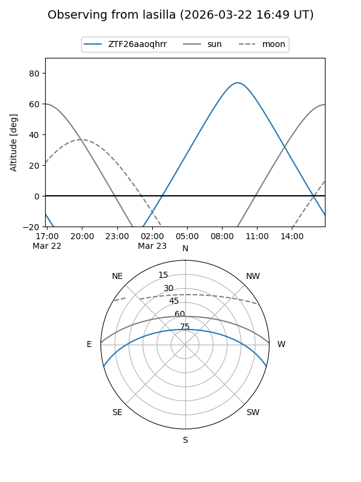
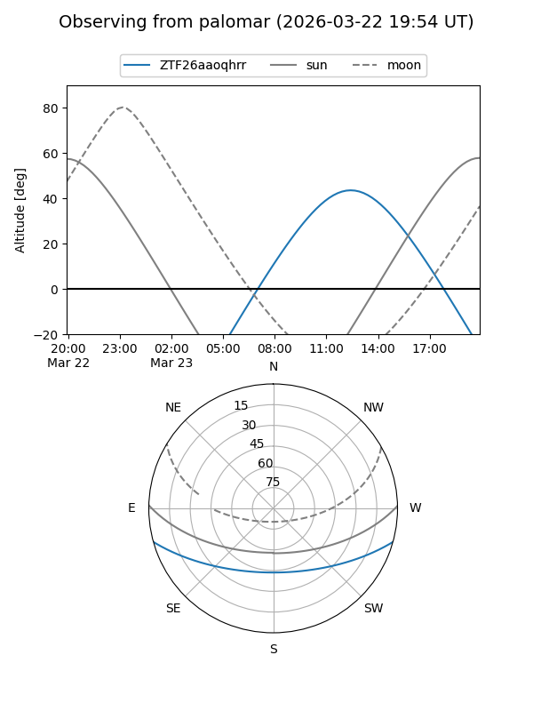

ZTF26aaoqhrr
Target ZTF26aaoqhrr at 2026-03-22 14:11
Aliases and brokers:
FINK: link
Lasair: link
ALeRCE: link
alt names
ZTF26aaoqhrr (ztf,fink_ztf)
Coordinates:
equatorial (ra, dec) = 249.9798,-12.99011
equatorial (HMS+DMS) = 16:39:55.16,-12:59:24.41
galactic (l, b) = (4.5971,+21.61028)
Flags:
Photometry:
last ztfg=17.59
1 ztfg detections
Lightcurve
Visibility


Additional plots